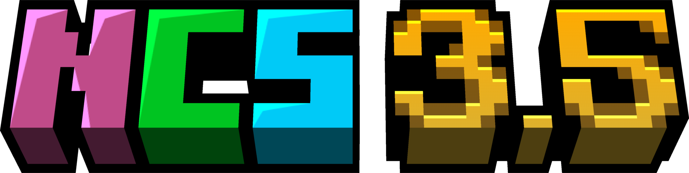
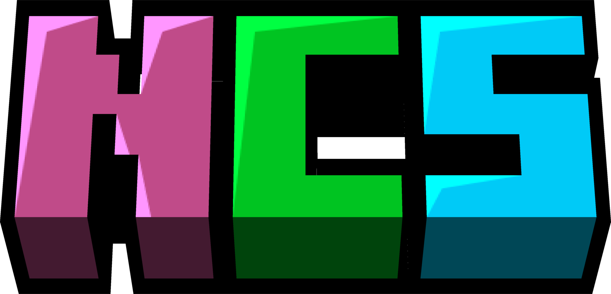

<!--
MomentariyModder Website 8.0.0 by MomentariyModder
The source code is available on GitHub!
-->

<!DOCTYPE html>
<html lang="en">
<head>
  <link rel="icon" href="img/icon.png">
  <title>NCS 3.5</title>
  <meta name="viewport" content="width=device-width, initial-scale=1, maximum-scale=1" />
  <meta name="title" content="NCS">
  <meta name="description" content="NaoCraftLab Community Server (сокращённо: NCS) — бесплатный приватный модовый сервер, созданный сообществом Discord-сервера NCL (NCL — Discord-сервер NaoCraftLab).">
  <meta name="keywords" content="NCS, NaoCraftLab">
  <meta name="theme-color" content="#4bb4f1">


  <script src="https://code.jquery.com/jquery-3.3.1.min.js"></script>
  <script src="https://cdn.jsdelivr.net/npm/handlebars@latest/dist/handlebars.js"></script>
  <script src="https://mcapi.us/scripts/minecraft.min.js"></script>
  <script src="js/main.js"></script>
  <script src="config.js"></script>
  <script src="js/lightbox.min.js"></script>  
  <script src="https://donorbox.org/widget.js" paypalExpress="false"></script>
  <script type="text/javascript" src="js/lang/home.js"></script>
 
  <script>tosAgreed = true</script>
  
  <link rel="stylesheet" href="https://cdnjs.cloudflare.com/ajax/libs/font-awesome/7.0.1/css/all.min.css"/>
  <link rel="stylesheet" href="css/style.css">
  <link rel="stylesheet" href="config.css">
  <link href="css/lightbox.css" rel="stylesheet" media="all">

</head>

<body>

  <div id="target"></div>

  <script id="template" type="text/x-handlebars-template">

  <header>
    <div class="hero" id="hero">
      <a href="#!"><h1 style="padding-top: 3%;"></h1></a>
	<br>
	<div id="projects-l1" class="grid">
	<div class="staff-card2">
	  <h2>Список модов</h2><br>
	  <a>- AI-Improvements</a><br>
	  <a>- Abnormals Delight</a><br>
	  <a>- Access Denied</a><br>
	  <a>- Access Denied - API</a><br>
	  <a>- Advancement Plaques</a><br>
	  <a>- Akashic Tome</a><br>
	  <a>- Alex's Mobs</a><br>
	  <a>- Alexs Delight</a><br>
	  <a>- All The Leaks</a><br>
	  <a>- Almanac</a><br>
	  <a>- Alternate Current</a><br>
	  <a>- AmbientSounds</a><br>
	  <a>- Amendments</a><br>
	  <a>- Another Furniture</a><br>
	  <a>- Architectury</a><br>
	  <a>- Ars Creo</a><br>
	  <a>- Ars Elemental</a><br>
	  <a>- Ars Nouveau</a><br>
	  <a>- Ars Nouveau's Flavors & Delight</a><br>
	  <a>- Ars Zero</a><br>
	  <a>- Ash API</a><br>
	  <a>- Athena</a><br>
	  <a>- AttributeFix</a><br>
	  <a>- BCLib</a><br>
	  <a>- BaguetteLib</a><br>
	  <a>- Balm</a><br>
	  <a>- Bedspreads</a><br>
	  <a>- Better Advancements</a><br>
	  <a>- Better End</a><br>
	  <a>- Better ModList</a><br>
	  <a>- Better Nether</a><br>
	  <a>- Blueprint</a><br>
	  <a>- Boatload</a><br>
	  <a>- Bookshelf</a><br>
	  <a>- Born In Configuration</a><br>
	  <a>- Born in Chaos </a><br>
	  <a>- Brewin' And Chewin'</a><br>
	  <a>- Caelus API</a><br>
	  <a>- Carry On</a><br>
	  <a>- Chat Heads</a><br>
	  <a>- Cherished Worlds</a><br>
	  <a>- ChickenChunks</a><br>
	  <a>- Chimes</a><br>
	  <a>- Chipped</a><br>
	  <a>- Citadel</a><br>
	  <a>- Cloth Config v15 API</a><br>
	  <a>- Clumps</a><br>
	  <a>- CodeChicken Lib</a><br>
	  <a>- Comforts</a><br>
	  <a>- Controlling</a><br>
	  <a>- Corpse</a><br>
	  <a>- Corpse Curios Compatibility</a><br>
	  <a>- CosmeticArmorReworked</a><br>
	  <a>- CraterLib</a><br>
	  <a>- Create</a><br>
	  <a>- Create Bits 'n' Bobs</a><br>
	  <a>- Create Confectionery</a><br>
	  <a>- Create Factory Logistics</a><br>
	  <a>- Create More: Parallel Pipes</a><br>
	  <a>- Create: Bells & Whistles</a><br>
	  <a>- Create: Central Kitchen</a><br>
	  <a>- Create: Copycats+</a><br>
	  <a>- Create: Dragons Plus</a><br>
	  <a>- Create: Enchantment Industry</a><br>
	  <a>- Create: Food</a><br>
	  <a>- Create: Industrialized Architecture</a><br>
	  <a>- Create: Mobile Packages</a><br>
	  <a>- Create: Numismatics</a><br>
	  <a>- Create: Ornithopter Glider</a><br>
	  <a>- Create: Smart Bounds</a><br>
	  <a>- Create: Steam 'n' Rails 1.21.1</a><br>
	  <a>- Create: The Factory Must Grow</a><br>
	  <a>- Create: Trading Floor</a><br>
	  <a>- Create: Trimmed</a><br>
	  <a>- Create: Vibrant Vaults</a><br>
	  <a>- Create:Schematic Checker</a><br>
	  <a>- CreativeCore</a><br>
	  <a>- Cristel Lib</a><br>
	  <a>- Cultural Delights</a><br>
	  <a>- Curios API</a><br>
	  <a>- Databank</a><br>
	  <a>- Design n' Decor</a><br>
	  <a>- Discord & Chat Images</a><br>
	  <a>- Dungeon's Delight</a><br>
	  <a>- Durability Tooltip</a><br>
	  <a>- Dynamic FPS</a><br>
	  <a>- EMI</a><br>
	  <a>- EMI Enchanting</a><br>
	  <a>- EMI Loot</a><br>
	  <a>- EMI Ores</a><br>
	  <a>- Easy Anvils</a><br>
	  <a>- Easy Magic</a><br>
	  <a>- Emojiful</a><br>
	  <a>- Emotecraft</a><br>
	  <a>- EnchantmentDescriptions</a><br>
	  <a>- Ender's Delight</a><br>
	  <a>- EntityCulling</a><br>
	  <a>- Etched</a><br>
	  <a>- Exclusions Lib</a><br>
	  <a>- Extra Delight</a><br>
	  <a>- F708 Guns Mod</a><br>
	  <a>- Farmer's Delight</a><br>
	  <a>- Farmer's Knives</a><br>
	  <a>- Fast Suite</a><br>
	  <a>- Ferrite Core</a><br>
	  <a>- Framework</a><br>
	  <a>- Fzzy Config</a><br>
	  <a>- Gallery</a><br>
	  <a>- Galosphere</a><br>
	  <a>- Gears n' Kinetics</a><br>
	  <a>- GeckoLib 4</a><br>
	  <a>- Geophilic</a><br>
	  <a>- Handcrafted</a><br>
	  <a>- Iceberg</a><br>
	  <a>- ImmediatelyFast</a><br>
	  <a>- Immersive Aircraft</a><br>
	  <a>- Immersive Optimization</a><br>
	  <a>- Iris</a><br>
	  <a>- Jade</a><br>
	  <a>- Jade Addons</a><br>
	  <a>- Kotlin for Forge</a><br>
	  <a>- Krypton FNP</a><br>
	  <a>- L_Ender 's Delight</a><br>
	  <a>- L_Ender's Cataclysm 1.21.1</a><br>
	  <a>- LambDynamicLights</a><br>
	  <a>- Leaves Be Gone</a><br>
	  <a>- Let Me Despawn</a><br>
	  <a>- Lithostitched</a><br>
	  <a>- Lootr</a><br>
	  <a>- Luki's Crazy Chambers</a><br>
	  <a>- M.R.U</a><br>
	  <a>- Macaw's Bridges</a><br>
	  <a>- Macaw's Paintings</a><br>
	  <a>- Man of Many Planes</a><br>
	  <a>- MidnightLib</a><br>
	  <a>- Model Gap Fix</a><br>
	  <a>- ModernFix</a><br>
	  <a>- Modonomicon</a><br>
	  <a>- Moonlight Lib</a><br>
	  <a>- More Culling</a><br>
	  <a>- Mouse Tweaks</a><br>
	  <a>- Mowzie's Mobs</a><br>
	  <a>- My Nether's Delight</a><br>
	  <a>- Nature's Compass</a><br>
	  <a>- Nedologin</a><br>
	  <a>- NetherPortalFix</a><br>
	  <a>- No Chat Reports</a><br>
	  <a>- Noisium</a><br>
	  <a>- Not Enough Recipe Book</a><br>
	  <a>- NotEnoughAnimations</a><br>
	  <a>- OctoLib</a><br>
	  <a>- Panda's Falling Trees</a><br>
	  <a>- PandaLib</a><br>
	  <a>- Particle Core</a><br>
	  <a>- Pastel</a><br>
	  <a>- Paxi</a><br>
	  <a>- Personality</a><br>
	  <a>- Placebo</a><br>
	  <a>- Polymorph</a><br>
	  <a>- PrickleMC</a><br>
	  <a>- Puzzles Lib</a><br>
	  <a>- Quark</a><br>
	  <a>- Reese's Sodium Options</a><br>
	  <a>- Resourceful Lib</a><br>
	  <a>- Rhino</a><br>
	  <a>- RunicLib</a><br>
	  <a>- Scholar</a><br>
	  <a>- Searchables</a><br>
	  <a>- Simple Voice Chat</a><br>
	  <a>- SkinRestorer</a><br>
	  <a>- Slavic Delight</a><br>
	  <a>- Snow Under Trees</a><br>
	  <a>- Sodium</a><br>
	  <a>- Sodium Extra</a><br>
	  <a>- Sophisticated Backpacks</a><br>
	  <a>- Sophisticated Backpacks Create Integration</a><br>
	  <a>- Sophisticated Core</a><br>
	  <a>- Storage Delight</a><br>
	  <a>- Structurify</a><br>
	  <a>- Stylish Effects</a><br>
	  <a>- SuperMartijn642's Config Library</a><br>
	  <a>- SuperMartijn642's Core Lib</a><br>
	  <a>- Supplementaries</a><br>
	  <a>- Tectonic</a><br>
	  <a>- TerraBlender</a><br>
	  <a>- Too Fast</a><br>
	  <a>- TooManyRecipeViewers</a><br>
	  <a>- Towns and Towers</a><br>
	  <a>- TrashSlot</a><br>
	  <a>- Universal Sawmill</a><br>
	  <a>- Upgrade Aquatic</a><br>
	  <a>- Visuality: Reforged</a><br>
	  <a>- Waystones</a><br>
	  <a>- When Dungeons Arise</a><br>
	  <a>- When Dungeons Arise: Seven Seas</a><br>
	  <a>- WorldWeaver</a><br>
	  <a>- WunderLib</a><br>
	  <a>- Xaero Train Map</a><br>
	  <a>- Xaero's Minimap</a><br>
	  <a>- Xaero's World Map</a><br>
	  <a>- YUNG's API</a><br>
	  <a>- YUNG's Better Caves</a><br>
	  <a>- YUNG's Better Dungeons</a><br>
	  <a>- YUNG's Better Strongholds</a><br>
	  <a>- YUNG's Cave Biomes</a><br>
	  <a>- YUNG's Extras</a><br>
	  <a>- YetAnotherConfigLib</a><br>
	  <a>- Zeta</a><br>
	  <a>- [Let's Do] Vinery</a><br>
	  <a>- cosmeticcorpsecompat</a><br>
	  <a>- iChunUtil</a><br>
	  <a>- lionfishapi</a><br>
	  <a>- oωo</a><br>
    </div>
	</div><br><br>
	<div id="news">
	  <div class="news-card">
        <a class="server-status-container"><i></i> Онлайн сервера: <span class="server-status info">0</span>.</a><br>
        <a>Copyright &copy; 2026 NaoCraftLab Community. Все права защищены.</a>
      </div>
	</div><br><br>
	</div>
  </header>
  </script>
</body>
</html>